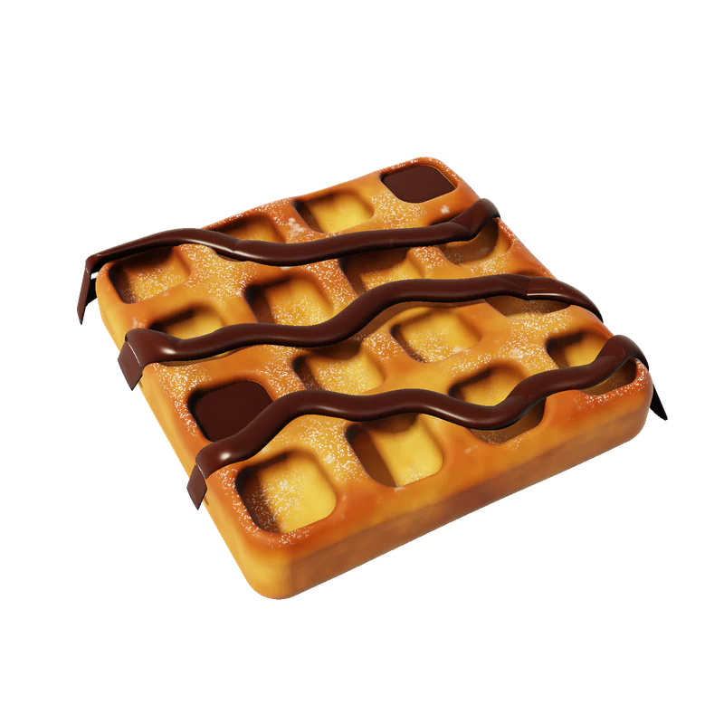
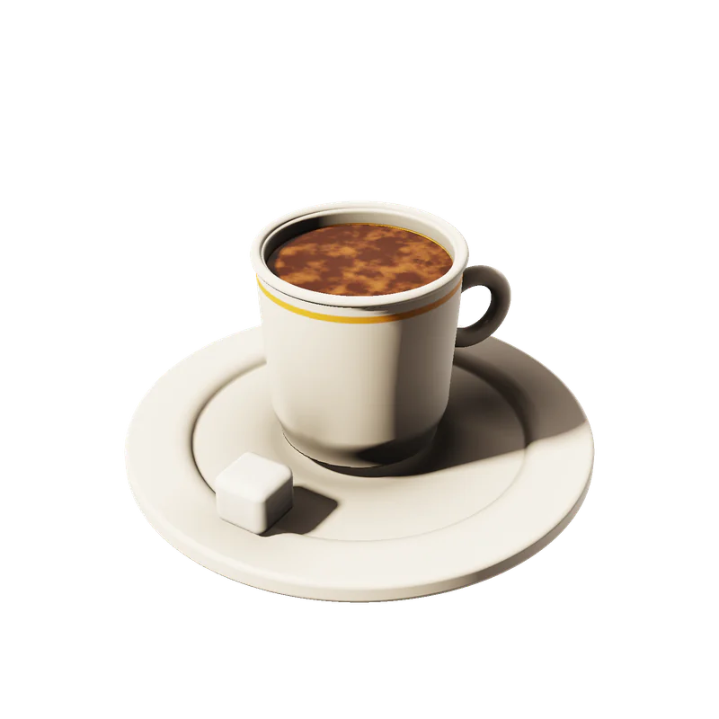

CUPISTAN
Nº 02 — İmza
CUP

16 cep / 1 waffle
SHA
KE
CUPISTAN
Pipet altın.
K — Waffle
D — Dondurma
G — Tatlı
B — İçecek
Bugün
hangi bölge?
EKLER
Çikolata / Fıstık / Karamel
ÜÇ
TOP
CUPISTAN

Orta şekerli.
Lokumu yanında
Bir bardağa
sığan ülke.
Gebze — Kocaeli
CUPISTAN